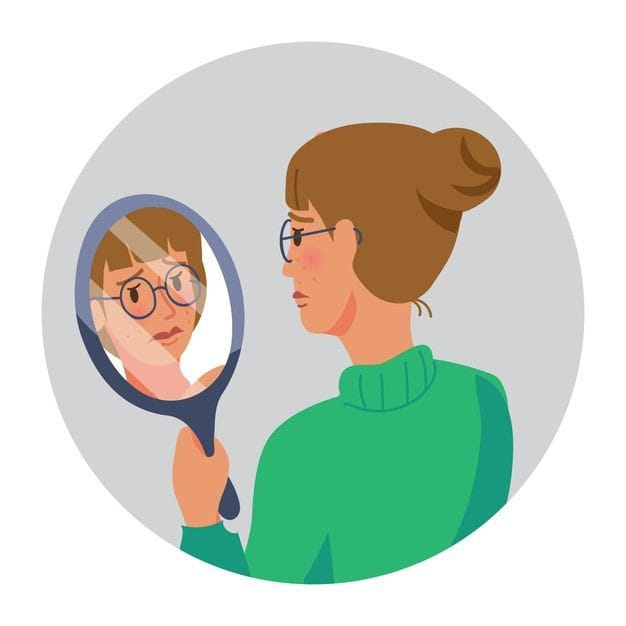
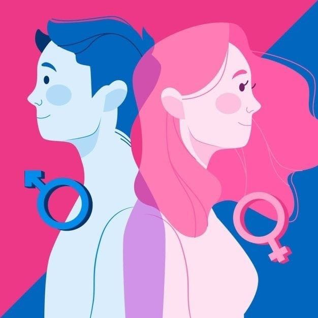
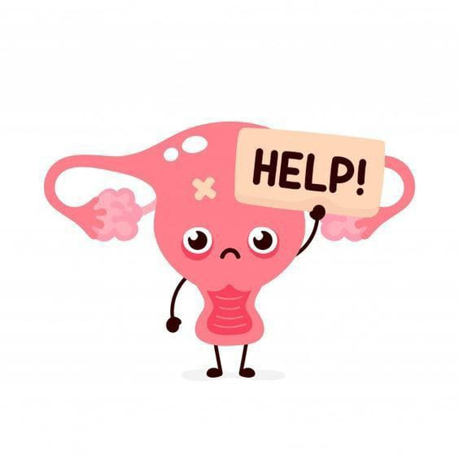

Memahami Sistem Reproduksi pada Manusia
Memahami Sistem Reproduksi pada Manusia
Tahu tidak friends bahwa awal kehidupan manusia terjadi ketika sel sperma bertemu dengan sel telur yang terjadi dalam hubungan seksual. Proses ini dapat berlangsung berkat adanya organ pada sistem reproduksi yang berfungsi dengan baik.
Lalu apa saja sih bagian bagian organ reproduksi dari manusia? Langsung saja kita bahas satu persatu

Sistem reproduksi pria
Struktur organ reproduksi eksternal pada pria meliputi:
- Penis
adalah organ vital pria yang digunakan untuk berhubungan seksual. Saat mencapai klimaks, sperma akan keluar melalui saluran di dalam penis.
- Skrotum
adalah kantong kulit yang menggantung pada pangkal penis. Kantung kecil dan berotot ini melindungi testis, beserta saraf dan pembuluh darah.
- Testis
sepasang organ pada sistem reproduksi laki-laki yang yang terletak di dalam skrotum. Berfungsi sebagai tempat sperma dan testosteron diproduksi.
Struktur organ reproduksi internal pada pria meliputi uretra, vas deferens, epididimis, vesikula seminalis, duktus ejakulatorius, kelenjar prostat, dan kelenjar bulbourethral yang berfungsi dalam produksi, penyimpanan, dan keluarnya sperma.
Hormon hormon dalam reproduksi pria meliputi:
Hormon testosteron, memiliki manfaat dalam perkembangan karakteristik seorang pria, termasuk bentuk tubuh dan gairah seksual. Hormon testosteron, beserta FSH (follicle stimulating hormone) dan LH (luteinizing hormone), juga berperan dalam produksi sperma.
Sistem reproduksi wanita
Beberapa organ dalam sistem reproduksi wanita, antara lain:
Ovarium
Ovarium adalah kelenjar berbentuk oval dan berukuran kecil yang terletak di kedua sisi rahim. Ovarium menghasilkan sel telur dan hormon estrogen serta progesteron.
Tuba Falopi
Organ ini berbentuk menyerupai tabung kecil yang menempel di bagian atas rahim. Tuba falopi berfungsi sebagai jalur sel telur untuk bergerak dari ovarium ke rahim. Proses pembuahan biasa terjadi pada organ ini.
Uterus (rahim)
Rahim adalah organ berongga berbentuk menyerupai buah pir yang merupakan tempat bagi janin untuk berkembang semasa kehamilan. Bagian bawah atau leher rahim, yang berhubungan dengan vagina, dikenal sebagai serviks.
Vagina
Vagina adalah jalur yang menghubungkan serviks (mulut rahim) ke bagian luar tubuh. Vagina dikenal juga sebagai jalan lahir. Saat berhubungan seksual, sperma akan disalurkan oleh penis melalui dalam organ ini.
Organ-organ eksternal dalam sistem reproduksi wanita, seperti labia mayora, labia minor, kelenjar Bartholin, dan klitoris, berfungsi dalam memicu hasrat seksual, melindungi organ reproduksi internal dari infeksi, dan mendukung pembuahan sel telur oleh sperma.
Organ-organ eksternal dalam sistem reproduksi wanita, seperti labia mayora, labia minor, kelenjar Bartholin, dan klitoris, berfungsi dalam memicu hasrat seksual, melindungi organ reproduksi internal dari infeksi, dan mendukung pembuahan sel telur oleh sperma.
Hormon hormon reproduksi wanita antara lain:
Hormon FSH, LH, estrogen dan progesteron. FSH dan LH membantu proses pembentukan sel telur di ovarium, sedangkan estrogen dan progesteron berperan penting untuk kehamilan.
Organ reproduksi juga harus dijaga, lalu bagaimana sih cara menjaganya?
Berikut adalah cara menjaga kesehatan organ sistem reproduksi:
- Untuk wanita, disarankan juga untuk melakukan hal berikut:
- Membersihkan area kemaluan dengan menggunakan air bersih dan mengalir
- Menggunakan sabun khusus untuk vagina jika diperlukan
- Memperhatikan penggunaan sabun mandi, sampo, detergen pencuci baju, dan pelumas, terutama jika memiliki kulit yang sensitif
- Sementara untuk pria, disarankan juga untuk:
- Mencuci penis, skrotum, perineum (bagian kulit di antara skrotum dan anus) dengan air bersih
- Memperhatikan arah serta cara mencukur rambut kemaluan untuk menghindari iritasi
- Membersihkan area lipatan kulup penis yang tidak disunat dari smegma yang mungkin menumpuk untuk menghindari risiko terjadinya balanitis
Pubertas
Apa saja sih yang friends tau tentang pubertas? Pubertas bukan hanya sekedar perubahan fisik aja lho, tetapi juga membahas tentang bagaimana cara menyikapinya seperti yang akan dibahas dibawah ini
Pubertas adalah proses perubahan atau perkembangan fisik seseorang menjadi dewasa secara seksual. Pada anak perempuan, pubertas biasanya terjadi pada rentang usia 10-14 tahun, sedangkan pada anak laki-laki terjadi pada usia 12-16 tahun. Perubahan tersebut dipicu oleh hormon androgen pada laki-laki dan hormon estrogen pada perempuan.

Ciri-ciri Pubertas
-
Ciri-Ciri Pubertas Perempuan
- Tumbuh rambut halus di daerah tertentu, seperti ketiak dan sekitar alat kelamin.
- Membesarnya payudara
- Panggul membesar dan melebar
- Munculnya jerawat dan peningkatan produksi keringat
- Suara menjadi halus dan tinggi
- Kulit bertambah halus
- Menstruasi
-
Ciri-Ciri Pubertas Laki-Laki
- Tumbuh rambut halus di tempat tertentu, seperti ketiak dan sekitar alat kelamin
- Suara semakin membesar
- Tumbuh jakun
- Tumbuh kumis, jambang, dan janggut
- Pundak dan dada semakin besar dan bidang
- Munculnya jerawat dan peningkatan produksi keringat
- Mimpi basah
Menyikapi Masa Pubertas
- Menjaga kebersihan tubuh dan organ reproduksi.
- Menjaga Kesehatan tubuh dengan olahraga dan makanan sehat.
- Menjaga diri dari pergaulan bebas dengan lawan jenis.
- Menjaga diri dari bacaan dan tontonan yang tidak sesuai dengan umur.
- Mendekatkan diri pada Tuhan Yang Maha Esa dengan mengikuti perintah dan menjauhi larangan-Nya.
Kekerasan dan Pelecehan Seksual
Pelecehan seksual bisa terjadi dimana saja dan kapan saja bahkan sering tidak kita sadari lho friends, yuk kita bahas lebih lanjut
Sebelumnya friends tahu tidak perbedaan antara kekerasan seksual dan pelecehan seksual? Atau malah menganggap nya sama? Padahal keduanya adalah hal yang berbeda
Kekerasan seksual merujuk pada segala bentuk tindakan fisik atau non-fisik yang memaksa seseorang untuk melakukan aktivitas seksual tanpa persetujuan, seperti pemerkosaan atau pelecehan seksual dengan kekerasan. Sedangkan pelecehan seksual merujuk pada perilaku yang tidak diinginkan dan tidak pantas yang berhubungan dengan seksualitas seseorang, termasuk komentar tidak senonoh, sentuhan yang tidak diinginkan, atau pencabulan.

Jenis-jenis Pelecehan Seksual
Menurut kategorinya, pelecehan seksual sendiri dibagi menjadi 4 jenis, yaitu:
-
Pelecehan Gender
Adalah pernyataan serta perilaku seksis yang menghina ataupun merendahkan suatu jenis kelamin Contohnya berkomentar tidak pantas tentang penampilan seseorang berdasarkan jenis kelaminnya
-
Perilaku Menggoda
adalah tindakan atau kata-kata yang berhubungan dengan seks yang membuat seseorang merasa tidak nyaman. Contohnya merayu atau memaksa seseorang untuk melakukan hal-hal yang tidak mereka inginkan secara seksual, seperti terus-menerus meminta kencan.
-
Penyuapan seksual
adalah permintaan aktivitas seksual ataupun perilaku terkait seks lainnya dengan janji imbalan. Contohnya mengajak seorang anak melakukan hubungan intim dengan iming-iming uang, asalkan ia tidak memberitahukannya kepada orang lain.
-
Pelanggaran Seksual
adalah tindakan yang melanggar batasan-batasan individu dalam konteks seksual, contohnya voyeurisme (mengintip orang yang sedang telanjang atau berhubungan seks)
Ciri-Ciri Pelecehan Seksual
- Menyentuh tubuh dengan tujuan seksual tanpa seizin mu.
- Sering melontarkan lelucon mengenai seks.
- Catcalling atau yang biasa dilakukan oleh seseorang yang tak dikenal dengan mengajak seseorang berkencan, ingin berkenalan, dan motif lainnya.
- Mengajak berhubungan intim secara langsung atau tersirat
- Seseorang yang menempelkan anggota tubuhnya secara sengaja
Hal yang Perlu Dilakukan ketika Mendapatkan Kekerasan dan Pelecehan Seksual
- Jangan merasa bersalah
- Simpan barang bukti
- Ceritakan kepada orang yang kamu percayai
- Lapor kepada pihak berwajib
- Pergi ke pelayanan kesehatan untuk melakukan visum
- Minta pertolongan lembaga masyarakat terkait
Gender

Kira-kira apa tanggapan friends ketika mendengar tentang gender? Kita mungkin masih menganggap bahwa gender itu sama dengan jenis kelamin, oleh karena itu kita remaja masa kini harus meluruskan pemahaman tersebut.
Gender adalah konsep yang digunakan untuk menggambarkan perbedaan sosial, perilaku, dan identitas antara laki-laki dan perempuan dalam masyarakat. Tidak hanya tentang perbedaan biologis antara laki-laki dan perempuan, tetapi juga tentang cara individu mengidentifikasi diri mereka sendiri dan bagaimana mereka berinteraksi dengan masyarakat berdasarkan identitas gender mereka.
Dengan menyadari pentingnya kesetaraan gender, semua orang dalam masyarakat bisa membantu menciptakan keadilan. Bahkan dalam keluarga, memperhatikan perbedaan gender bisa membuat hubungan lebih harmonis dan kuat. Dari sini, kita bisa membangun dasar yang kokoh untuk mengupayakan kesetaraan gender di semua aspek kehidupan, termasuk dalam kebijakan yang dibuat oleh pemerintah.
Nah, sudah ngga bingung lagi kan tentang gender? Mulai dari sekarang kita harus melek akan gender ya friends.
Pergaulan Bebas

Pergaulan bebas, dua kata yang tidak asing bukan? Pergaulan bebas adalah perilaku menyimpang yang melanggar norma sosial dan agama.
Friends perlu tahu apa aja ciri-ciri pergaulan bebas. Pergaulan bebas dapat diketahui dengan beberapa ciri sebagai berikut:
- Kurang bertanggung jawab terhadap tugas yang sudah diberikan
- Tidak bijak dalam memanfaatkan waktu seperti main game hingga pagi hari
- Menghamburkan uang untuk kesenangan semata menuruti kepuasan nafsu.
- Melakukan seks bebas
- Merokok dan minum-minum alkohol
- Memakai obat-obatan terlarang seperti narkoba
- Selalu memiliki rasa ingin tahu yang berlebih terhadap hal-hal yang negatif
Penyebab pergaulan bebas yaitu:
- Rendahnya tingkat pendidikan
- Keluarga broken home
- Ekonomi keluarga
- Kurang wawasan agama
- Penyalahgunaan penggunaan internet
- Faktor lingkungan
- Kontrol diri
- Gaya hidup
Dampak Pergaulan Bebas
- Remaja yang melakukan seks bebas bisa mengakibatkan kehamilan diluar nikah, meningkatkan risiko penyakit kelamin seperti HIV AIDS, epilepsi hingga herpes.
- Remaja yang mencoba mengkonsumsi narkoba dan obat-obatan terlarang dapat merusak kesehatan fisik dan mental dalam jangka panjang.
- Meningkatkan risiko kriminalitas pada anak remaja untuk memenuhi keinginannya. Seperti merampok, mencuri hingga membunuh.
- Dilihat dari segi agama, tentunya remaja yang terlibat dalam pergaulan bebas dan melakukan perilaku menyimpang akan mendapatkan dosa berat.
- Remaja yang terlibat dalam pergaulan bebas dan perilaku menyimpang biasanya kekurangan kepercayaan diri dalam berinteraksi dengan keluarga, teman, dan masyarakat.
- Karena pergaulan bebas, bisa mengganggu waktu belajar yang pada akhirnya membuat prestasi di sekolah menurun.
Cara Menghindari Pergaulan Bebas
- Memilih lingkungan yang positif dan sehat, di mana nilai-nilai moral dan etika dijunjung tinggi.
- Menentukan standar pribadi yang jelas terkait perilaku yang ingin dihindari, dan pegang teguh pada nilai-nilai tersebut.
- Memfokuskan diri melakukan kegiatan positif, seperti belajar, berolahraga, atau berkontribusi pada komunitas.
- Berkomunikasi terbuka dengan keluarga atau teman dekat tentang kekhawatiran anda terkait pergaulan bebas dan mintalah dukungan mereka.
Selain itu, penting juga untuk memahami dan mengenali potensi risiko serta konsekuensi dari terlibat dalam pergaulan bebas, dan tetap menjaga komitmen untuk menjauhinya ya friends.
Aman saat Berinternet

Tahu tidak friends bahwa setidaknya ada 30 juta anak dan remaja di Indonesia yang menjadi pengguna internet?
Internet memiliki dampak positif dalam meningkatkan konektivitas, namun penyalahgunaan internet juga dapat menimbulkan dampak negatif lho.
Salah satu dari dampak negatif itu adalah:
- Sexting: mengirim pesan melalui online baik berupa kata, gambar atau video dengan unsur seksual.
- Grooming: bujuk rayu untuk tujuan seksual secara online.
- Sextortion: pemerasan seksual secara online.
- Live streaming: siaran langsung kekerasan seksual secara online.
- Csam (Child sexual abuse material): materi yang menampilkan kekerasan seksual yang didapat dari komputer atau media digital.
Bagaimana cara menjadikan internet sebagai tempat yang aman bagi kita semua?
Ini yang dapat kamu lakukan:
- Tunjukkan perilaku baik di dunia maya. Berikan dukungan bagi temanmu dengan memberikan senyum atau like, serta memberikan pesan positif.
- Periksa pengaturan akunmu dan kata sandimu. Apakah kata sandimu 12345? Apakah kamu pernah membagikan kata sandimu kepada seorang teman? Siapa yang dapat melihat postinganmu? Kapan terakhir kali kamu mengecek pengaturan privasi akunmu?
- Jangan menyebarkan rumor. Jangan menyebarkan rumor atau membagikan cerita atau foto yang menyakitkan atau membuat malu seseorang. Hal yang kamu anggap sebagai lelucon bisa jadi menyakitkan bagi orang lain.
3 Kunci Aman Berinternet
Ingatlah ketiga hal ini ketika kamu berinternet:
-
Pikirkan dulu sebelum kamu menerima sebuah permintaan
Cek dulu profil orang yang mengirimkan permintaan teman kepada kamu dan cari tahu siapa mereka. Ingat, ada orang yang suka berpura-pura menjadi orang lain, dan terkadang sulit untuk tahu apakah mereka berkata jujur atau tidak.
-
Pikirkan dulu sebelum kamu mengirimkan sesuatu
Hal yang kamu anggap sebagai lelucon bisa jadi menyakitkan bagi orang lain. Pikirkan baik-baik sebelum kamu menekan tombol 'kirim'.
-
Pikirkan dulu sebelum kamu membagikan sesuatu
Kamu bisa mengubah pengaturan privasi di akun media sosialmu untuk mengontrol siapa yang dapat melihat informasimu – termasuk tempat-tempat yang pernah kamu datangi.
Jika kamu melihat sesuatu di media sosial yang membuat kamu marah atau menyakitimu, kamu bisa melaporkannya. Dalam berbagai platform media sosial, kamu dapat melaporkan sebuah postingan atau foto jika hal itu melanggar peraturan komunitas. Kebanyakan platform media sosial memperbolehkanmu untuk mengeblok seseorang agar kamu tidak melihat konten mereka dan mereka tidak bisa menghubungimu atau mengirimkan pesan kepadamu.
Yuk mulai sekarang bijak dalam berinternet.
Penyakit Menular Seksual (PMS)

Apa Itu Penyakit Menular Seksual (PMS)?
Penyakit menular seksual (PMS) adalah penyakit infeksi yang menular melalui kontak seksual, darah, sperma, atau cairan tubuh lainnya. Terkadang, penyakit ini bisa menular melalui kontak fisik intim lainnya. Beberapa PMS, seperti herpes dan HPV, bisa menyebar melalui kontak kulit ke kulit. Selain itu, pemakaian jarum suntik secara berulang atau bergantian di antara beberapa orang juga bisa menularkan penyakit.
Jenis-Jenis Penyakit Menular Seksual (PMS)
-
Sifilis
Sifilis adalah penyakit menular seksual yang terjadi akibat infeksi bakteri Treponema pallidum. Penyakit ini mempunyai gejala berupa munculnya luka pada alat kelamin atau mulut. Luka ini pada umumnya akan bertahan antara 1-2,5 bulan dengan tidak menimbulkan rasa sakit, tetapi mudah menular. Sifilis yang tidak kamu obati bisa menyebabkan kelumpuhan, kebutaan, impotensi dan bahkan terkena masalah pendengaran serta hilangnya nyawa seseorang.
-
Gonore
PMS ini terjadi akibat bakteri Neisseria gonorrhoeae. Kondisi ini juga banyak orang kenali dengan kencing nanah, karena menyebabkan keluarnya cairan saat buang air kecil yang menyebabkan rasa nyeri pada penis atau vagina.
-
Klamidia
Klamidia merupakan PMS yang paling umum terjadi. Penyakit yang terjadi akibat Clamidia trachomatis ini memang tidak menimbulkan gejala yang signifikan. Namun, klamidia tetap harus kamu waspadai karena penularannya bisa terjadi tanpa disadari oleh orang yang terinfeksi.
-
Kutil Kelamin
Kutil kelamin merupakan salah satu penyakit yang terjadi akibat virus human papiloma virus di sekitar alat kelamin. Penyakit ini tidak menimbulkan rasa sakit tetapi biasanya akan muncul rasa gatal dan memerah.
-
HIV
HIV (human immunodeficiency virus) akan menyebar melalui cairan tubuh dan menyerang sistem kekebalan tubuh. Pada tahap awal, HIV tidak akan menunjukkan gejala, karena virus akan “tidur” sementara waktu. Virus ini akan menunggu sistem imun melemah, dan dapat berkembang menjadi penyakit acquired immunodeficiency syndrome (AIDS) yang sangat mematikan.
-
Herpes genital
Ini adalah penyakit menular yang terjadi akibat virus herpes simpleks (HSV). Herpes genital bisa menyebabkan rasa sakit, gatal dan luka di area genital pengidap. Namun, pengidap bisa juga tidak mengalami gejala, tapi tetap bisa menularkan virus, bahkan ketika tidak memiliki luka yang terlihat.
Berikut faktor-faktor yang bisa meningkatkan risiko terkena penyakit ini:
- Memiliki banyak pasangan seksual. Selain itu, aktivitas seksual dengan lebih dari satu pasangan juga dapat meningkatkan risiko terkena PMS.
- Mempunyai riwayat IMS. Memiliki satu infeksi menular seksual membuat penyakit menular seksual lainnya lebih mudah tertular.
- Penyalahgunaan alkohol atau penggunaan obat-obatan rekreasional. Hal ini bisa menurunkan penilaian kamu dan, membuat kamu cenderung melakukan perilaku berisiko, seperti seks bebas.
- Menggunakan narkoba suntik. Berbagi jarum suntik saat menyuntikkan narkoba dapat menyebarkan banyak infeksi serius.
Untuk mencegah penularan PMS dapat dilakukan dengan cara:
- Hindari melakukan hubungan seksual dengan lebih dari satu orang
- Rutin menjaga kebersihan organ intim
- Selalu gunakan alat pengaman saat berhubungan intim
- Vaksinasi. Terdapat vaksin untuk mencegah HPV dan hepatitis B